Introduction
The Silhouette package provides a comprehensive and extensible framework for computing and visualizing silhouette widths to assess clustering quality in both crisp (hard) and soft (fuzzy/probabilistic) clustering settings. Silhouette width, originally introduced by Rousseeuw (1987), quantifies how similar an observation is to its assigned cluster relative to the closest alternative cluster. Scores range from -1 (indicative of poor clustering) to 1 (excellent separation).
Note: This package does not use the classical Rousseeuw (1987) calculation directly. Instead, it generalizes and extends silhouette methodology as follows:
- Implements the Simplified Silhouette method (Van der Laan, Pollard, and Bryan 2003), with options for medoid or pac (Probability of Alternative Cluster, Raymaekers and Rousseeuw (2022)) approaches.
- Provides soft clustering silhouettes based on membership probabilities (Campello and Hruschka 2006; Bhat Kapu and Kiruthika 2024), including density-based diagnostics like certainty and density-based silhouettes.
- Includes density-based silhouette (dbSilhouette) computation, which leverages log-ratios of posterior probabilities for soft clustering evaluation (Menardi 2011).
- Supports calculation of crisp, fuzzy, and median silhouette widths, allowing flexible averaging methods to suit different clustering needs.
- Supports multi-way clustering evaluation via extSilhouette() (Schepers, Ceulemans, and Van Mechelen 2008), enabling silhouette analysis for biclustering or higher-order tensor clustering. Offers customizable and informative visualization with plotSilhouette(), including grayscale options and detailed cluster legends. The package also integrates with clustering results from popular R packages such as cluster (silhouette, pam, clara, fanny) and factoextra (eclust, hcut).
- Includes utility functions for creating and validating Silhouette objects directly from components.
This vignette demonstrates the essential features of the package using the well-known iris dataset. It showcases both standard (crisp) and fuzzy silhouette calculations, advanced plotting capabilities, and extended silhouette metrics for multi-way clustering scenarios.
Available Functions
Silhouette(): Calculates silhouette
widths for both crisp and fuzzy clustering, using user-supplied
proximity matrices.
softSilhouette(): Computes silhouette
widths tailored to soft clustering by interpreting membership
probabilities as proximities.
dbSilhouette(): Computes density-based
silhouette widths for soft clustering, based on log-ratios of posterior
probabilities.
cerSilhouette(): Computes certainty
silhouette widths for soft clustering, using the maximum posterior
probabilities as silhouette values.
-
calSilhouette()
Computes all available silhouette indices from the package functions and returns a comparative summary data frame. Automatically calculates crisp, fuzzy, and median silhouette values across different methods including proximity-based (medoid, pac), soft silhouette variations (pp_pac, pp_medoid, nlpp_pac, nlpp_medoid, pd_pac, pd_medoid), and probability-based methods (cer, db). Supports direct matrix input or clustering function output for streamlined comparative analysis.
getSilhouette(): Constructs a
Silhouette class object directly from user-provided components (e.g.,
cluster assignments, neighbor clusters, silhouette widths).
is.Silhouette(): Tests whether an
object is of class “Silhouette”, with optional strict structural
validation.
plot() / plotSilhouette(): Visualizes
silhouette widths as sorted bar plots, offering grayscale and flexible
legend options for clarity.
summary(): Produces concise summaries
of average silhouette widths and cluster sizes for objects of class
Silhouette.
extSilhouette(): Derives extended
silhouette widths for multi-way clustering problems, such as
biclustering or tensor clustering.
Use Cases
1. Simplified Silhouette Calculation
a. When the Proximity Matrix is Unknown but Centers of Clusters Are Known
This example demonstrates how to compute silhouette widths for a
clustering result when you have the proximity (distance) matrix between
observations and cluster centres unknown. The workflow uses the classic
iris dataset and k-means clustering.
Steps:
-
Clustering: Perform k-means clustering on
iris[, -5]with 3 clusters.
Note: The kmeans output (km) does
not include a proximity matrix. Therefore, distances between
observations and cluster centroids must be computed separately.
-
Compute the Proximity Matrix:
Create a matrix of distances between each observation and cluster centroid usingproxy::dist().
library(proxy)
dist_matrix <- proxy::dist(iris[, -5], km$centers)
sil <- Silhouette(dist_matrix)
head(sil)
#> cluster neighbor sil_width
#> 1 1 2 0.9586603
#> 2 1 2 0.8682865
#> 3 1 2 0.8831417
#> 4 1 2 0.8465006
#> 5 1 2 0.9455979
#> 6 1 2 0.7848442
summary(sil)
#> -----------------------------------------------------
#> Average crisp dissimilarity medoid silhouette: 0.6664
#> -----------------------------------------------------
#>
#> cluster size avg.sil.width
#> 1 1 50 0.8592
#> 2 2 62 0.5546
#> 3 3 38 0.5950
plot(sil)-
Customize Calculation:
To use the Probability of Alternative Cluster (PAC) method (which is more penalised variation of medoid method) and return a sorted output:
sil_pac <- Silhouette(dist_matrix, method = "pac", sort = TRUE)
head(sil_pac)
#> cluster neighbor sil_width
#> 8 1 2 0.9611009
#> 40 1 2 0.9329754
#> 1 1 2 0.9206029
#> 18 1 2 0.9182947
#> 50 1 2 0.9158517
#> 41 1 2 0.8993130
summary(sil_pac)
#> --------------------------------------------------
#> Average crisp dissimilarity pac silhouette: 0.5376
#> --------------------------------------------------
#>
#> cluster size avg.sil.width
#> 1 1 50 0.7603
#> 2 2 62 0.4136
#> 3 3 38 0.4468
plot(sil_pac)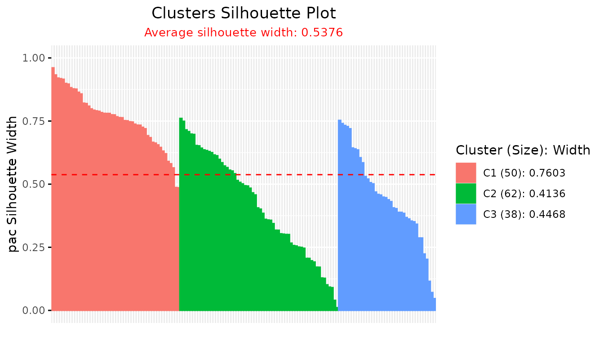
-
Accessing Silhouette Summaries:
TheSilhouettefunction prints overall and cluster-wise silhouette indices to the R console ifprint.summary = TRUE, but these values are not directly stored in the returned object. To extract them programmatically, use thesummary()function:
s <- summary(sil_pac,print.summary = TRUE)
#> --------------------------------------------------
#> Average crisp dissimilarity pac silhouette: 0.5376
#> --------------------------------------------------
#>
#> cluster size avg.sil.width
#> 1 1 50 0.7603
#> 2 2 62 0.4136
#> 3 3 38 0.4468
# summary table
s$sil.sum
#> cluster size avg.sil.width
#> 1 1 50 0.7603
#> 2 2 62 0.4136
#> 3 3 38 0.4468
# cluster wise silhouette widths
s$clus.avg.widths
#> 1 2 3
#> 0.7602929 0.4136203 0.4468368
# Overall average silhouette width
s$avg.width
#> [1] 0.5375927b. When the Proximity Matrix Is Known
This section describes how to compute silhouette widths when the
proximity matrix—representing distances between
observations and cluster centers—is readily available as part of the
clustering model output. The example makes use of fuzzy c-means
clustering via the ppclust package and the classic
iris dataset.
Steps:
-
Step 1: Perform Fuzzy C-Means Clustering
Apply fuzzy c-means clustering oniris[, -5]to create three clusters.
-
Step 2: Compute Silhouette Widths Using the Proximity
Matrix
The output objectfmcontains a distance matrixfm$drepresenting proximities between each observation and each cluster center, which can be directly fed to theSilhouette()function.
sil_fm <- Silhouette(fm$d)
plot(sil_fm)
-
Alternative: Directly Use the Clustering Function with
clust_fun
To streamline the workflow, you can let theSilhouette()function internally handle both clustering and silhouette calculation by supplying the name of the distance matrix ("d") and the desired clustering function:
sil_fcm <- Silhouette(prox_matrix = "d", clust_fun = fcm, x = iris[, -5], centers = 3)
plot(sil_fcm)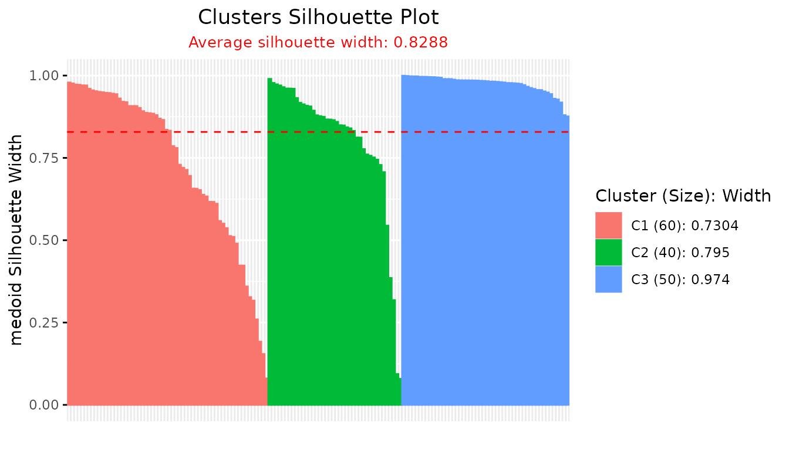
This approach eliminates the explicit step of extracting the proximity matrix, making analyses more concise.
Summary:
When the proximity matrix is provided directly by a clustering algorithm
(as with fuzzy c-means), silhouette widths can be calculated in one
step. For further convenience, the Silhouette() function
accepts both the proximity matrix and a clustering function, so that a
single command completes the clustering and computes silhouettes. This
greatly simplifies the process for methods with built-in proximity
outputs, supporting rapid and reproducible evaluation of clustering
separation and quality.
c. Calculation of Fuzzy Silhouette Index for Soft Clustering Algorithms
This section explains how to compute the fuzzy silhouette index when
both the proximity matrix (distances from observations
to cluster centers) and the membership probability
matrix are available. The process is demonstrated with fuzzy
c-means clustering from the ppclust package applied to the
classic iris dataset.
Steps:
-
Step 1: Perform Fuzzy C-Means Clustering
Apply fuzzy c-means clustering to the feature columns of theirisdataset, specifying three clusters:
-
Step 2: Compute Fuzzy Silhouette Widths Using Proximity and
Membership Matrices
The clustering outputfm1contains both the distance matrix (fm1$d) and the membership probability matrix (fm1$u) andaverage = "fuzzy". These can be directly passed to theSilhouette()function to compute fuzzy silhouette widths:
sil_fm1 <- Silhouette(prox_matrix = fm1$d, prob_matrix = fm1$u, average = "fuzzy")
plot(sil_fm1)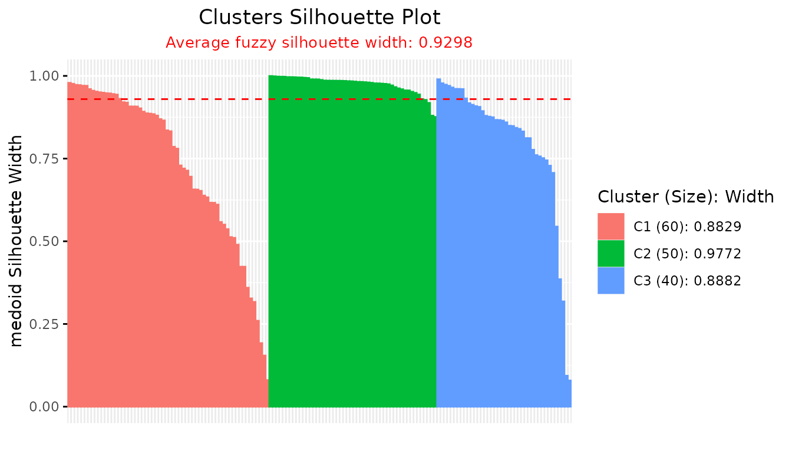
-
Alternative: Use Clustering Function Inline with
clust_fun
For an even more streamlined workflow, theSilhouette()function can internally manage clustering and silhouette calculations by accepting the names of the distance and probability components ("d"and"u") along with the clustering function:
library(ppclust)
sil_fcm1 <- Silhouette(prox_matrix = "d", prob_matrix = "u", average = "fuzzy", clust_fun = fcm, x = iris[, -5], centers = 3)
plot(sil_fcm1)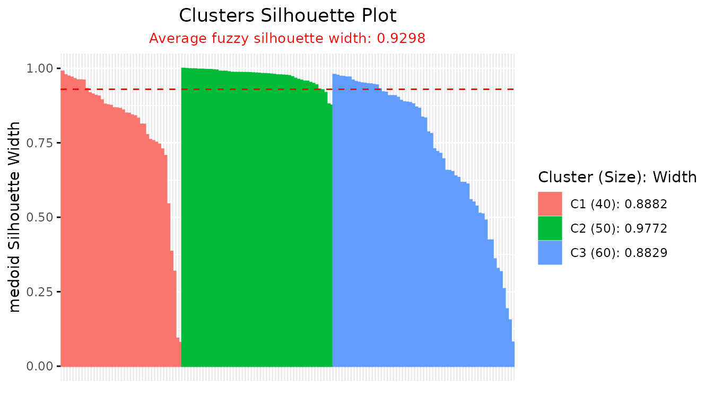
This approach removes the need to manually extract matrices from the clustering result, improving code efficiency and reproducibility.
Summary:
When both the proximity and membership probability matrices are directly
available from a clustering algorithm (such as fuzzy c-means), fuzzy
silhouette widths can be calculated efficiently in a single step. The
Silhouette() function further supports an integrated
workflow by running both the clustering and silhouette calculations
internally when provided with the relevant function and argument names.
This functionality facilitates a concise, reproducible pipeline for
validating the quality and separation of soft clustering results.
2. Comparing Two Soft Clustering Algorithms Using the Soft Silhouette Function
It is often desirable to assess and compare the clustering quality of different soft clustering algorithms on the same dataset. The soft silhouette index offers a principled, internal measure for this purpose, as it naturally incorporates the probabilistic nature of soft clusters and provides a single value summarizing both cluster compactness and separation.
Example: Evaluating Fuzzy C-Means vs. an Alternative Soft Clustering Algorithm
Suppose we wish to compare the performance of two fuzzy clustering
algorithms—such as Fuzzy C-Means (FCM) and a variant (e.g., FCM2)—using
the softSilhouette() function.
Steps:
-
Step 1: Perform Clustering with Both Algorithms
Fit each soft clustering algorithm on your dataset (e.g.,
iris[, 1:4]):
data(iris)
# FCM clustering
fcm_result <- ppclust::fcm(iris[, 1:4], 3)
# FCM2 clustering
fcm2_result <- ppclust::fcm2(iris[, 1:4], 3)-
Step 2: Compute Soft Silhouette Index for Each Result
Use the membership probability matrices produced by each algorithm:
# Soft silhouette for FCM
sil_fcm <- softSilhouette(prob_matrix = fcm_result$u)
plot(sil_fcm)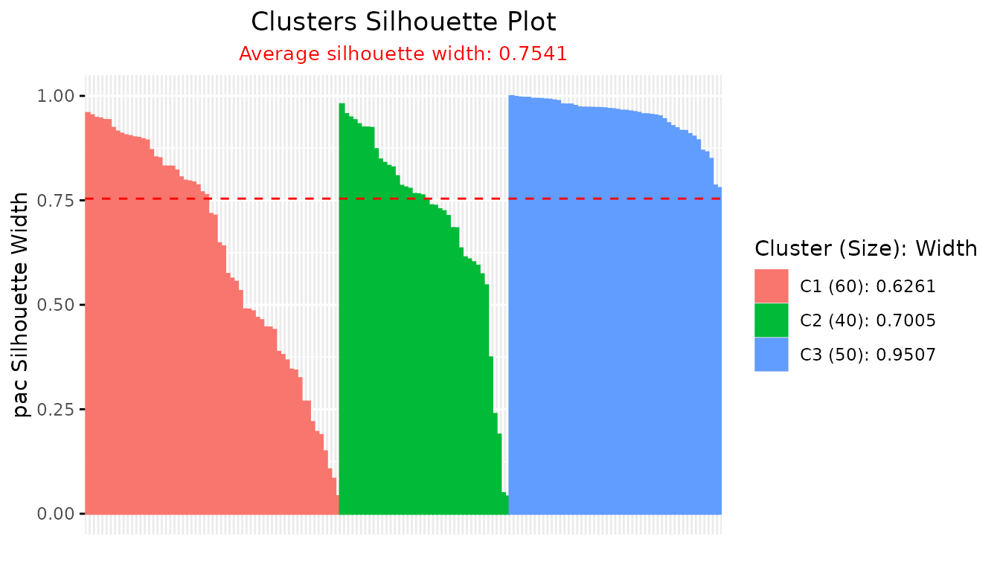
# Soft silhouette for FCM2
sil_fcm2 <- softSilhouette(prob_matrix = fcm2_result$u)
plot(sil_fcm2)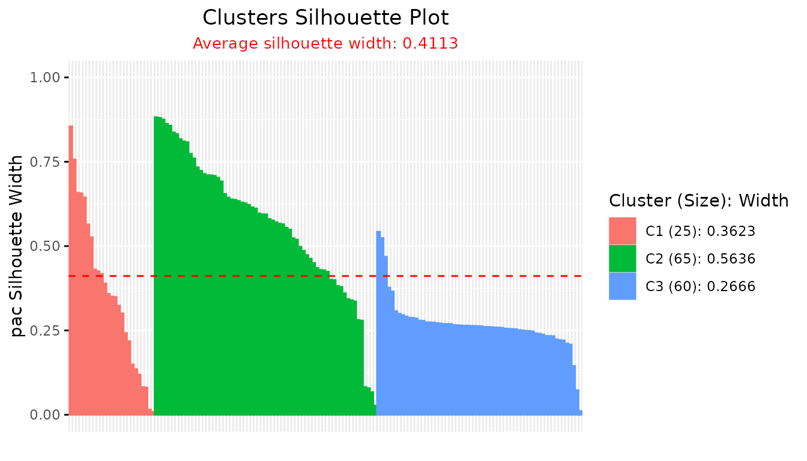
-
Step 3: Summarize and Compare Average Silhouette Widths
Extract the overall average silhouette width for each clustering result:
sfcm <- summary(sil_fcm, print.summary = FALSE)
sfcm2 <- summary(sil_fcm2, print.summary = FALSE)
cat("FCM average silhouette width:", sfcm$avg.width, "\n",
"FCM2 average silhouette width:", sfcm2$avg.width)
#> FCM average silhouette width: 0.7541271
#> FCM2 average silhouette width: 0.411275A higher average silhouette width indicates a clustering with more compact and well-separated clusters.
Interpretation & Guidance
- Interpret the Index: The algorithm yielding a higher average soft silhouette width is considered to produce a better clustering, as it balances cluster cohesion and separation while accounting for the uncertainty inherent in soft assignments.
- Practical Application: This method is generic; any two or more soft clustering results (not limited to FCM/FCM2) can be compared effectively, provided you can extract the membership probability matrix.
-
Flexible Integration: The
softSilhouette()function also allows for different silhouette calculation methods and transformations (such asprob_type = "nlpp"for negative log-probabilities), supporting deeper comparisons aligned with your methodological framework.
Additional Soft Clustering Methods
The package also provides two additional methods for computing soft
silhouette widths: cerSilhouette() (Certainty-based) and
dbSilhouette() (Density-based). These can be used in the
same way as softSilhouette() to compare clustering
algorithms.
# Certainty-based silhouette for FCM and FCM2
cer_fcm <- cerSilhouette(prob_matrix = fcm_result$u, print.summary = TRUE)
#> ----------------------------------------------
#> Average crisp similarity db silhouette: 0.8572
#> ----------------------------------------------
#>
#> cluster size avg.sil.width
#> 1 1 60 0.7826
#> 2 2 40 0.8351
#> 3 3 50 0.9645
#> Available attributes: names, class, row.names, proximity_type, method, average
plot(cer_fcm)
cer_fcm2 <- cerSilhouette(prob_matrix = fcm2_result$u, print.summary = TRUE)
#> ----------------------------------------------
#> Average crisp similarity db silhouette: 0.6236
#> ----------------------------------------------
#>
#> cluster size avg.sil.width
#> 1 1 25 0.5974
#> 2 2 65 0.7135
#> 3 3 60 0.5371
#> Available attributes: names, class, row.names, proximity_type, method, average
plot(cer_fcm2)
# Density-based silhouette for FCM and FCM2
db_fcm <- dbSilhouette(prob_matrix = fcm_result$u, print.summary = TRUE)
#> ---------------------------------------
#> Median similarity db silhouette: 0.3098
#> ---------------------------------------
#>
#> cluster size avg.sil.width
#> 1 1 60 0.2225
#> 2 2 40 0.2456
#> 3 3 50 0.5074
#> Available attributes: names, class, row.names, proximity_type, method, average
plot(db_fcm)
db_fcm2 <- dbSilhouette(prob_matrix = fcm2_result$u, print.summary = TRUE)
#> ---------------------------------------
#> Median similarity db silhouette: 0.2607
#> ---------------------------------------
#>
#> cluster size avg.sil.width
#> 1 1 25 0.2642
#> 2 2 65 0.4942
#> 3 3 60 0.1943
#> Available attributes: names, class, row.names, proximity_type, method, average
plot(db_fcm2)
# Compare average silhouette widths across all methods
# Summary for FCM
cer_sfcm <- summary(cer_fcm, print.summary = FALSE)
db_sfcm <- summary(db_fcm, print.summary = FALSE)
# Summary for FCM2
cer_sfcm2 <- summary(cer_fcm2, print.summary = FALSE)
db_sfcm2 <- summary(db_fcm2, print.summary = FALSE)
# Print comparison
cat("FCM - Soft silhouette:", sfcm$avg.width, "\n",
"FCM - Certainty silhouette:", cer_sfcm$avg.width, "\n",
"FCM - Density-based silhouette:", db_sfcm$avg.width,
"\n\n","FCM2 - Soft silhouette:", sfcm2$avg.width,
"\n","FCM2 - Certainty silhouette:", cer_sfcm2$avg.width,
"\n","FCM2 - Density-based silhouette:", db_sfcm2$avg.width, "\n")
#> FCM - Soft silhouette: 0.7541271
#> FCM - Certainty silhouette: 0.8572481
#> FCM - Density-based silhouette: 0.3097745
#>
#> FCM2 - Soft silhouette: 0.411275
#> FCM2 - Certainty silhouette: 0.6235972
#> FCM2 - Density-based silhouette: 0.2607283Summary:
Comparing the average soft silhouette widths from different soft
clustering algorithms provides an objective, data-driven basis for
determining which method produces more meaningful, well-defined clusters
in probabilistic settings. This approach harmonizes easily with both
classic fuzzy clustering and more advanced algorithms, and can be
extended to other soft silhouette methods like certainty-based and
density-based approaches.
3. Scree Plot for Optimal Number of Clusters
The scree plot (also called the “elbow plot” or “reverse elbow plot”) is a practical tool for identifying the best number of clusters in unsupervised learning. Here, the silhouette width is calculated for different values of k (number of clusters). The resulting plot provides a visual indication of the optimal cluster count by highlighting where increasing k yields only marginal improvements in the average silhouette width.
Steps:
-
Step 1: Compute Average Silhouette Widths at Varying Cluster
Counts
Run silhouette analysis across a range of possible cluster numbers (e.g., 2 to 7). For each k, use the anySilhouetteclass function to calculate the silhouette widths, then extract the average silhouette width from the summary.
data(iris)
avg_sil_width <- rep(NA,7)
for (k in 2:7) {
sil_out <- Silhouette(
prox_matrix = "d",
method = "pac",
clust_fun = ppclust::fcm,
x = iris[, 1:4],
centers = k)
avg_sil_width[k] <- summary(sil_out, print.summary = FALSE)$avg.width
}-
Step 2: Create and Interpret the Scree Plot
Plot the number of clusters against the computed average silhouette widths:
plot(avg_sil_width,
type = "o",
ylab = "Overall Silhouette Width",
xlab = "Number of Clusters",
main = "Silhouette Scree Plot"
)The optimal number of clusters is often suggested by the “elbow” or “reverse elbow”—the point after which increases in k lead to diminishing or excessive improvements in silhouette width. This visual guide is valuable for assessing the clustering structure in your data.
Note: Any Silhouette class functions can be
used to generate scree plots for optimal cluster selection. For
theoretical background and additional diagnostic options for soft
clustering, see Bhat Kapu and Kiruthika
(2024).
Summary:
The scree plot provides an intuitive graphical summary to assist in
choosing the optimal number of clusters by plotting average silhouette
width versus the number of clusters considered. The integrated use of
Silhouette(), softSilhouette(),
cerSilhouette(), dbSilhouette() use of
clust_fun and summary functions makes this analysis
straightforward and efficient for both crisp and fuzzy clustering
frameworks. This method encourages a reproducible, objective approach to
cluster selection in unsupervised analysis.
4. Visualizing Silhouette Analysis Results with
plotSilhouette()
Efficient visualization of silhouette widths is essential for
interpreting and diagnosing clustering quality. The
plotSilhouette() function provides a flexible and
extensible tool for plotting silhouette results from various clustering
algorithms, supporting both hard (crisp) and soft (fuzzy)
partitions.
Key Features: - Accepts outputs from a wide range of
clustering methods: Silhouette,
softSilhouette, dbSilhouette,
cerSilhouette as well as clustering objects from
cluster (pam, clara,
fanny, base silhouette) and
factoextra (eclust, hcut). -
Offers detailed legends summarizing average silhouette widths and
cluster sizes. - Supports customizable color palettes, including
grayscale, and the option to label observations on the x-axis.
Illustrative Use Cases and Code
- Crisp Silhouette Visualization (e.g., k-means clustering):
data(iris)
km_out <- kmeans(iris[, -5], 3)
dist_mat <- proxy::dist(iris[, -5], km_out$centers)
sil_obj <- Silhouette(dist_mat)
plot(sil_obj) # S3 method auto-dispatch
plotSilhouette(sil_obj) # explicit call (identical output)
- Crisp Silhouette from Cluster Algorithms (PAM, CLARA, FANNY):
library(cluster)
pam_result <- pam(iris[, 1:4], k = 3)
plotSilhouette(pam_result) # for cluster::pam object
clara_result <- clara(iris[, 1:4], k = 3)
plotSilhouette(clara_result)
fanny_result <- fanny(iris[, 1:4], k = 3)
plotSilhouette(fanny_result)
- Base silhouette object:
sil_base <- cluster::silhouette(pam_result)
plotSilhouette(sil_base)- factoextra::hcut/eclust clusterings:
library(factoextra)
eclust_result <- eclust(iris[, 1:4], "kmeans", k = 3, graph = FALSE)
plotSilhouette(eclust_result)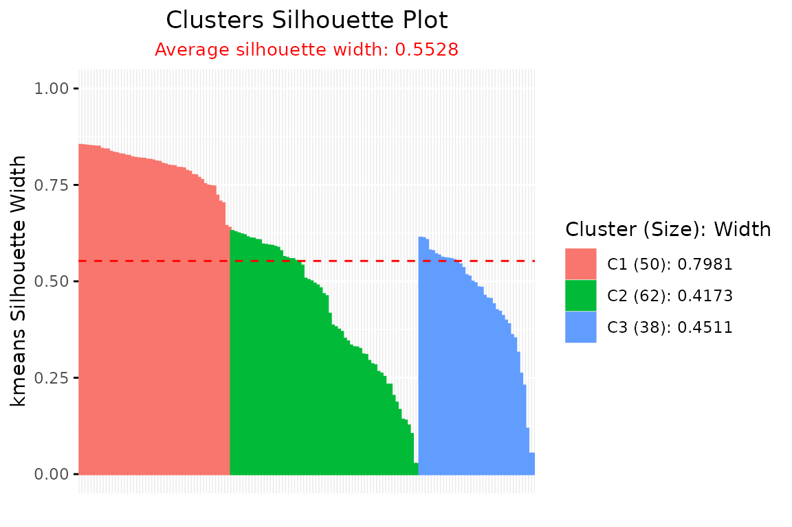
hcut_result <- hcut(iris[, 1:4], k = 3)
plotSilhouette(hcut_result)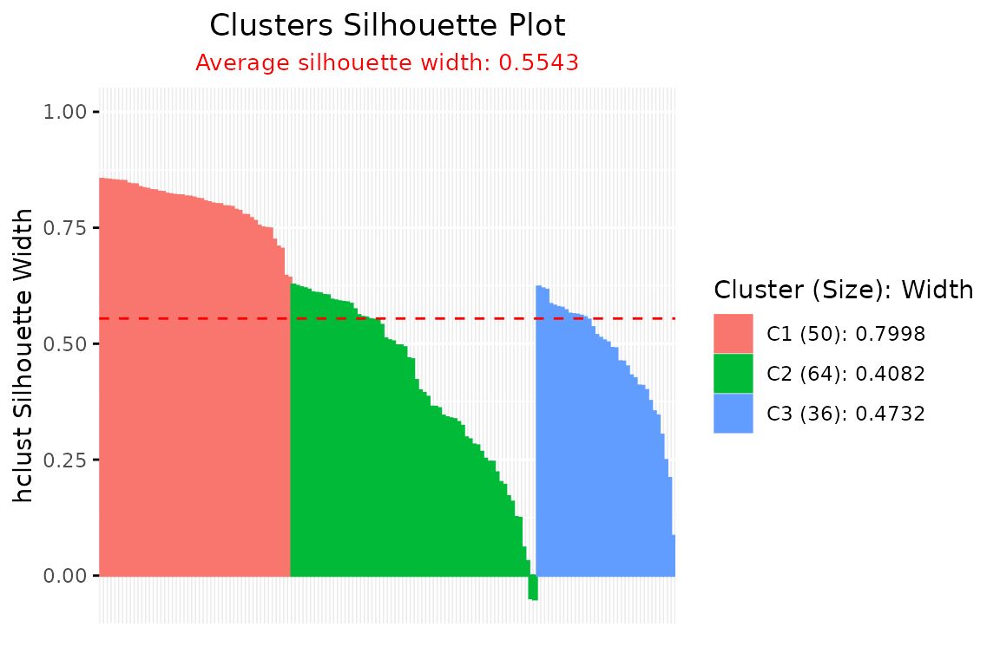
- drclust::silhouette Visualization:
library(drclust)
# Loading the numeric in matrix
iris_mat <- as.matrix(iris[,-5])
#applying a clustering algorithm
drclust_out <- dpcakm(iris_mat, 20, 3)
#silhouette based on the data and the output of the clustering algorithm
d <- silhouette(iris_mat, drclust_out)
#> Warning: `aes_string()` was deprecated in ggplot2 3.0.0.
#> ℹ Please use tidy evaluation idioms with `aes()`.
#> ℹ See also `vignette("ggplot2-in-packages")` for more information.
#> ℹ The deprecated feature was likely used in the factoextra package.
#> Please report the issue at <https://github.com/kassambara/factoextra/issues>.
#> This warning is displayed once every 8 hours.
#> Call `lifecycle::last_lifecycle_warnings()` to see where this warning was
#> generated.
#> cluster size ave.sil.width
#> 1 1 17 0.16
#> 2 2 16 0.35
#> 3 3 14 0.06
#> 4 4 10 0.15
#> 5 5 9 -0.09
#> 6 6 9 0.11
#> 7 7 8 0.28
#> 8 8 8 -0.02
#> 9 9 7 0.23
#> 10 10 7 0.12
#> 11 11 7 0.08
#> 12 12 6 0.41
#> 13 13 6 -0.05
#> 14 14 6 0.09
#> 15 15 5 0.31
#> 16 16 4 0.08
#> 17 17 4 0.45
#> 18 18 3 0.28
#> 19 19 3 0.31
#> 20 20 1 0.00
plotSilhouette(d$cl.silhouette)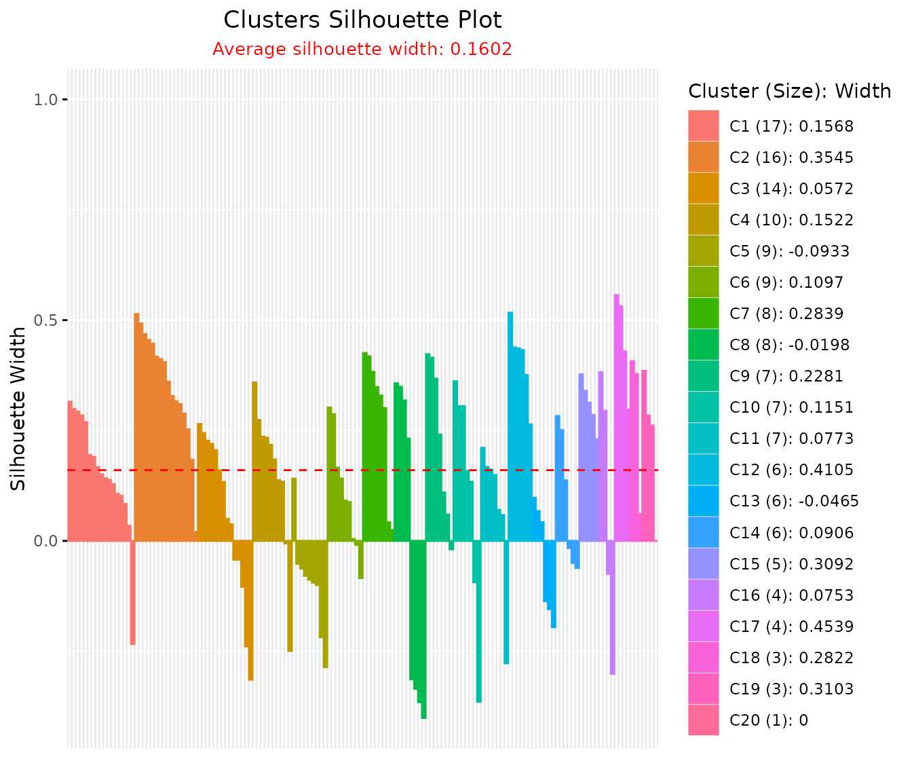
- Fuzzy (Soft) Silhouette Visualization (e.g., fuzzy c-means with ppclust):
data(iris)
fcm_out <- ppclust::fcm(iris[, 1:4], 3)
sil_fuzzy <- Silhouette(
prox_matrix = "d", prob_matrix = "u", clust_fun = fcm,
x = iris[, 1:4], centers = 3, sort = TRUE
)
plot(sil_fuzzy, summary.legend = FALSE, grayscale = TRUE)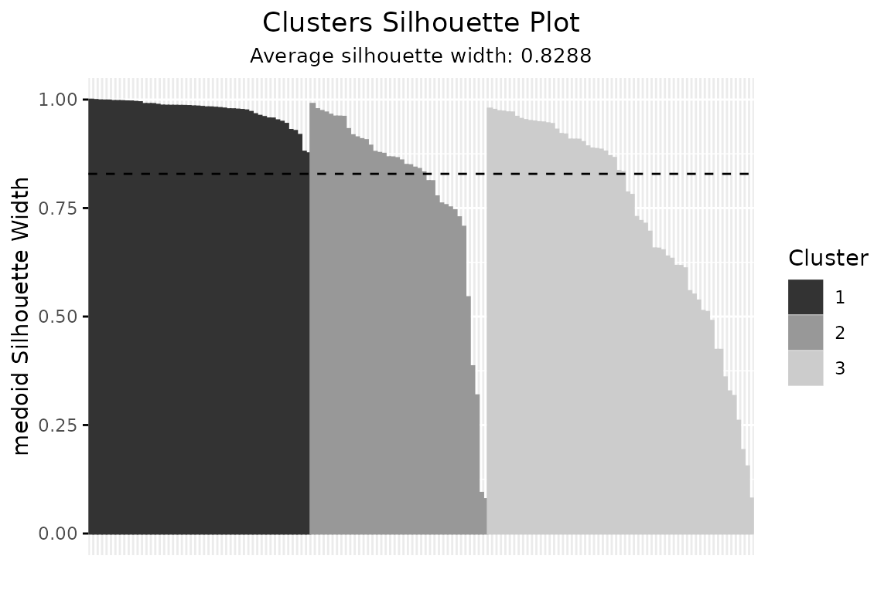
- Customization: Grayscale, Detailed Legends, and Observation Labels:
plotSilhouette(sil_fuzzy, grayscale = TRUE) # Use grayscale palette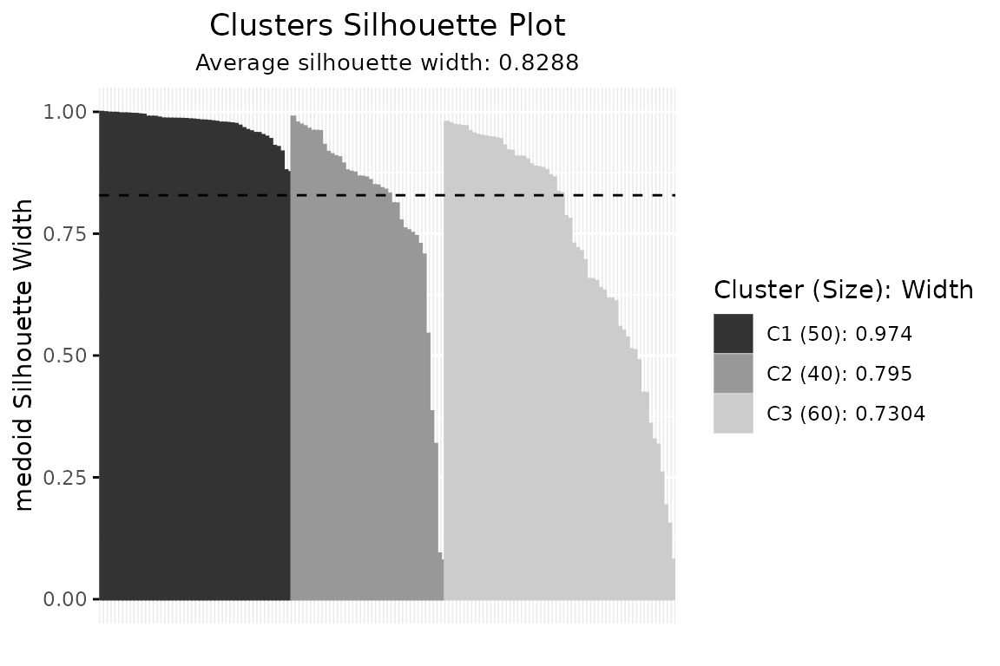
plotSilhouette(sil_fuzzy, summary.legend = TRUE) # Include size + avg silhouette in legend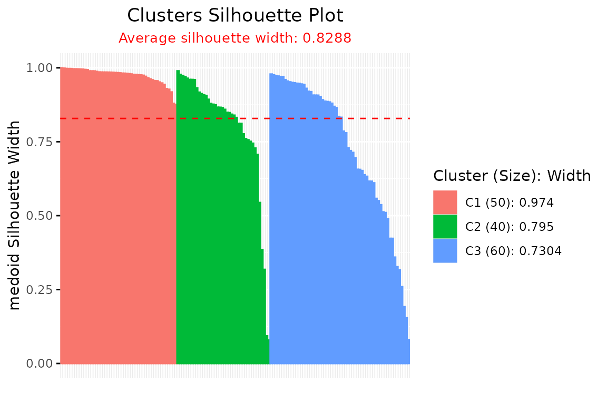
plotSilhouette(sil_fuzzy, label = TRUE) # Label bars with row index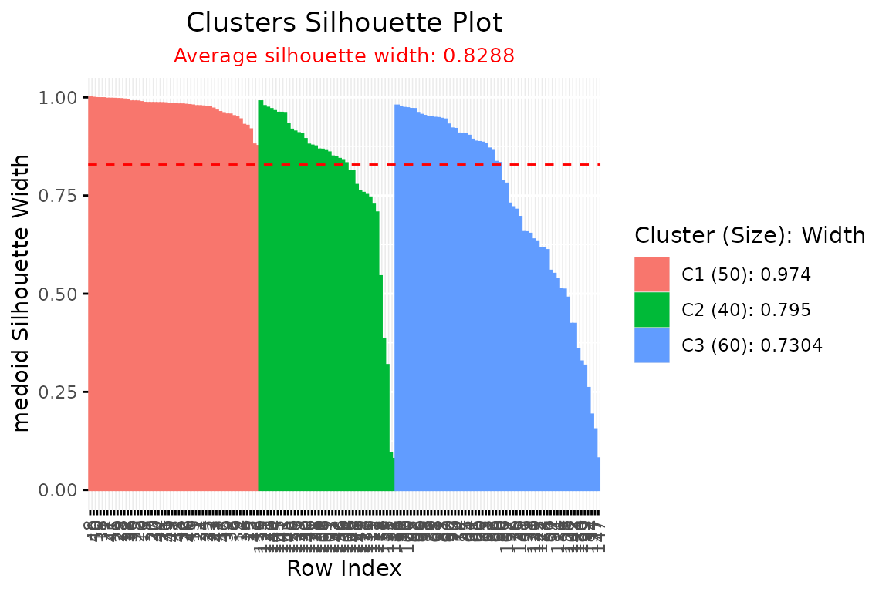
Practical Guidance: - For clustering output classes
not supported by the generic plot() function, always use
plotSilhouette() explicitly to ensure correct and
informative visualization. - The function automatically sorts silhouette
widths within clusters, displays the average silhouette (dashed line),
and provides detailed cluster summaries in the legend.
Summary:plotSilhouette() brings unified, publication-ready
visualization capabilities for assessing crisp and fuzzy clustering at a
glance. Its broad compatibility, detailed legends, grayscale and
labeling options empower users to gain deeper insights into clustering
structure, facilitating clear diagnosis and reporting in both
exploratory and formal statistical workflows.
5. Creating and Validating User-Defined Silhouette Objects
The getSilhouette() function enables users to manually
construct a Silhouette object from precomputed cluster
assignments, neighbor clusters, silhouette widths, and optional weights.
This is particularly useful for custom or externally derived clustering
results.
The is.Silhouette() function validates whether an object
is a valid Silhouette object, ensuring it meets the
necessary structural and attribute requirements for visualization and
analysis.
Example:
# Create a custom Silhouette object
cluster_assignments <- c(1, 1, 2, 2, 3, 3)
neighbor_clusters <- c(2, 2, 1, 1, 1, 1)
silhouette_widths <- c(0.8, 0.7, 0.6, 0.9, 0.5, 0.4)
weights <- c(0.9, 0.8, 0.7, 0.95, 0.6, 0.5)
sil_custom <- getSilhouette(
cluster = cluster_assignments,
neighbor = neighbor_clusters,
sil_width = silhouette_widths,
weight = weights,
proximity_type = "similarity",
method = "pac",
average = "fuzzy"
)
# Validate the object
is.Silhouette(sil_custom) # Basic class check: TRUE
#> [1] TRUE
is.Silhouette(sil_custom, strict = TRUE) # Strict structural validation: TRUE
#> [1] TRUE
is.Silhouette(data.frame(a = 1:6)) # Non-Silhouette object: FALSE
#> [1] FALSE
# Visualize the custom Silhouette object
plotSilhouette(sil_custom, summary.legend = TRUE)
This approach allows users to integrate custom silhouette
computations into the Silhouette package’s
visualization framework, ensuring flexibility for specialized workflows
while maintaining compatibility with plotSilhouette().
6. Comprehensive Comparison of All Silhouette Methods with
calSilhouette()
The calSilhouette() function provides a streamlined
approach to compute and compare all available silhouette methods from
the package in a single call. This function is particularly useful
for:
- Comparing multiple silhouette computation methods simultaneously
- Evaluating clustering quality across different averaging approaches (crisp, fuzzy, median)
- Rapid assessment of clustering performance using various silhouette formulations
Key Features: - Automatically computes all compatible silhouette methods based on available input matrices - Returns a comprehensive summary data frame comparing crisp, fuzzy, and median silhouette values - Supports both direct matrix input and clustering function output - Computes up to 11 different silhouette methods when both proximity and probability matrices are provided
Available Methods:
When proximity matrix is provided: -
medoid - Medoid-based silhouette - pac -
PAC-based silhouette
When probability matrix is provided: -
pp_pac, pp_medoid - Posterior probabilities
with PAC/Medoid methods - nlpp_pac,
nlpp_medoid - Negative log posterior probabilities with
PAC/Medoid methods - pd_pac, pd_medoid -
Probability distribution with PAC/Medoid methods - cer -
Certainty-based silhouette - db - Density-based
silhouette
a. Comprehensive Method Comparison Using Clustering Function
This example demonstrates how to use calSilhouette()
with a clustering function to automatically compute all available
silhouette methods:
library(ppclust)
data(iris)
# Compute all silhouette methods using FCM clustering
summary_result <- calSilhouette(
prox_matrix = "d",
prob_matrix = "u",
proximity_type = "dissimilarity",
clust_fun = ppclust::fcm,
x = iris[, -5],
centers = 3,
print.summary = TRUE
)
#>
#> Summary of All Silhouette Methods
#> ==========================================
#> Method Crisp Fuzzy Median
#> medoid 0.8288288 0.9297577 0.9179945
#> pac 0.7541271 0.8799106 0.8484197
#> pp_pac 0.7541271 0.8799106 0.8484197
#> pp_medoid 0.8288288 0.9297577 0.9179945
#> nlpp_pac 0.8185224 0.9304926 0.9261387
#> nlpp_medoid 0.8749545 0.9604788 0.9616532
#> pd_pac 0.7469894 0.8786105 0.8562152
#> pd_medoid 0.8196600 0.9280044 0.9225377
#> cer 0.8572481 0.9248327 0.9041529
#> db 0.3303585 0.4206051 0.3097745
# View the results
head(summary_result)
#> Method Crisp Fuzzy Median
#> 1 medoid 0.8288288 0.9297577 0.9179945
#> 2 pac 0.7541271 0.8799106 0.8484197
#> 3 pp_pac 0.7541271 0.8799106 0.8484197
#> 4 pp_medoid 0.8288288 0.9297577 0.9179945
#> 5 nlpp_pac 0.8185224 0.9304926 0.9261387
#> 6 nlpp_medoid 0.8749545 0.9604788 0.9616532b. Method Comparison Using Output Proximity Matrices
When clustering has already been performed, you can directly use the output matrices:
# Perform clustering first
fcm_result <- ppclust::fcm(iris[, -5], centers = 3)
# Compute all silhouette methods using the clustering output
summary_direct <- calSilhouette(
prox_matrix = fcm_result$d,
prob_matrix = fcm_result$u,
proximity_type = "dissimilarity",
a = 2,
print.summary = TRUE
)
#>
#> Summary of All Silhouette Methods
#> ==========================================
#> Method Crisp Fuzzy Median
#> medoid 0.8288288 0.9297577 0.9179945
#> pac 0.7541271 0.8799106 0.8484197
#> pp_pac 0.7541271 0.8799106 0.8484197
#> pp_medoid 0.8288288 0.9297577 0.9179945
#> nlpp_pac 0.8185224 0.9304926 0.9261387
#> nlpp_medoid 0.8749545 0.9604788 0.9616532
#> pd_pac 0.7469894 0.8786105 0.8562152
#> pd_medoid 0.8196600 0.9280044 0.9225377
#> cer 0.8572481 0.9248327 0.9041529
#> db 0.3303585 0.4206051 0.3097745
# Access specific results
head(summary_direct)
#> Method Crisp Fuzzy Median
#> 1 medoid 0.8288288 0.9297577 0.9179945
#> 2 pac 0.7541271 0.8799106 0.8484197
#> 3 pp_pac 0.7541271 0.8799106 0.8484197
#> 4 pp_medoid 0.8288288 0.9297577 0.9179945
#> 5 nlpp_pac 0.8185224 0.9304926 0.9261387
#> 6 nlpp_medoid 0.8749545 0.9604788 0.9616532c. Comparing Clustering Algorithms Using
calSilhouette()
A powerful application of calSilhouette() is comparing
multiple clustering algorithms across all silhouette methods:
# Compare FCM and FCM2 algorithms
fcm_summary <- calSilhouette(
prox_matrix = "d",
prob_matrix = "u",
proximity_type = "dissimilarity",
clust_fun = ppclust::fcm,
x = iris[, -5],
centers = 3,
print.summary = FALSE
)
fcm2_summary <- calSilhouette(
prox_matrix = "d",
prob_matrix = "u",
proximity_type = "dissimilarity",
clust_fun = ppclust::fcm2,
x = iris[, -5],
centers = 3,
print.summary = FALSE
)
# Create comparison data frame
comparison <- data.frame(
Method = fcm_summary$Method,
FCM_Crisp = fcm_summary$Crisp,
FCM2_Crisp = fcm2_summary$Crisp,
FCM_Fuzzy = fcm_summary$Fuzzy,
FCM2_Fuzzy = fcm2_summary$Fuzzy,
stringsAsFactors = FALSE
)
print(comparison)
#> Method FCM_Crisp FCM2_Crisp FCM_Fuzzy FCM2_Fuzzy
#> 1 medoid 0.8288288 0.7181559 0.9297577 0.8566239
#> 2 pac 0.7541271 0.5988649 0.8799106 0.7700619
#> 3 pp_pac 0.7541271 0.5988649 0.8799106 0.7700619
#> 4 pp_medoid 0.8288288 0.7181559 0.9297577 0.8566239
#> 5 nlpp_pac 0.8185224 0.6700537 0.9304926 0.8326067
#> 6 nlpp_medoid 0.8749545 0.7748310 0.9604788 0.8991463
#> 7 pd_pac 0.7469894 0.4262756 0.8786105 0.5744897
#> 8 pd_medoid 0.8196600 0.5598445 0.9280044 0.6963562
#> 9 cer 0.8572481 0.7452355 0.9248327 0.8427990
#> 10 db 0.3303585 0.3473950 0.4206051 0.5002794d. Visualizing Method Comparisons
Visualize the comparison across different methods and averaging approaches:
library(ggplot2)
library(tidyr)
# Reshape data for plotting
comparison_long <- tidyr::pivot_longer(
comparison,
cols = -Method,
names_to = "Algorithm_Type",
values_to = "Silhouette_Width"
)
# Create grouped bar plot
ggplot(comparison_long, aes(x = Method, y = Silhouette_Width, fill = Algorithm_Type)) +
geom_bar(stat = "identity", position = "dodge") +
theme_minimal() +
theme(
axis.text.x = element_text(angle = 45, hjust = 1, size = 10),
legend.position = "bottom"
) +
labs(
title = "Comparison of Silhouette Methods: FCM vs FCM2",
x = "Silhouette Method",
y = "Average Silhouette Width",
fill = "Algorithm & Type"
) +
scale_fill_brewer(palette = "Set2") +
geom_hline(yintercept = 0, linetype = "dashed", color = "gray40")e. Selecting Optimal Number of Clusters Using
calSilhouette()
Use calSilhouette() to evaluate clustering quality
across different numbers of clusters:
# Compute silhouette summaries for k = 2 to 6
k_range <- 2:6
results_list <- list()
for (k in k_range) {
results_list[[as.character(k)]] <- calSilhouette(
prox_matrix = "d",
prob_matrix = "u",
proximity_type = "dissimilarity",
clust_fun = ppclust::fcm,
x = iris[, -5],
centers = k,
print.summary = FALSE
)
}
# Extract crisp pac method silhouette widths for comparison
pac_widths <- sapply(results_list, function(x) x$Crisp[x$Method == "pac"])
# Plot optimal k selection
plot(k_range, pac_widths,
type = "o", pch = 19,
xlab = "Number of Clusters (k)",
ylab = "Average Silhouette Width (PAC method)",
main = "Optimal Cluster Selection using calSilhouette()",
col = "steelblue", lwd = 2,
ylim = c(min(pac_widths) * 0.95, max(pac_widths) * 1.05)
)
grid()
abline(h = max(pac_widths), lty = 2, col = "red")
text(k_range[which.max(pac_widths)], max(pac_widths),
labels = paste("Optimal k =", k_range[which.max(pac_widths)]),
pos = 3, col = "red")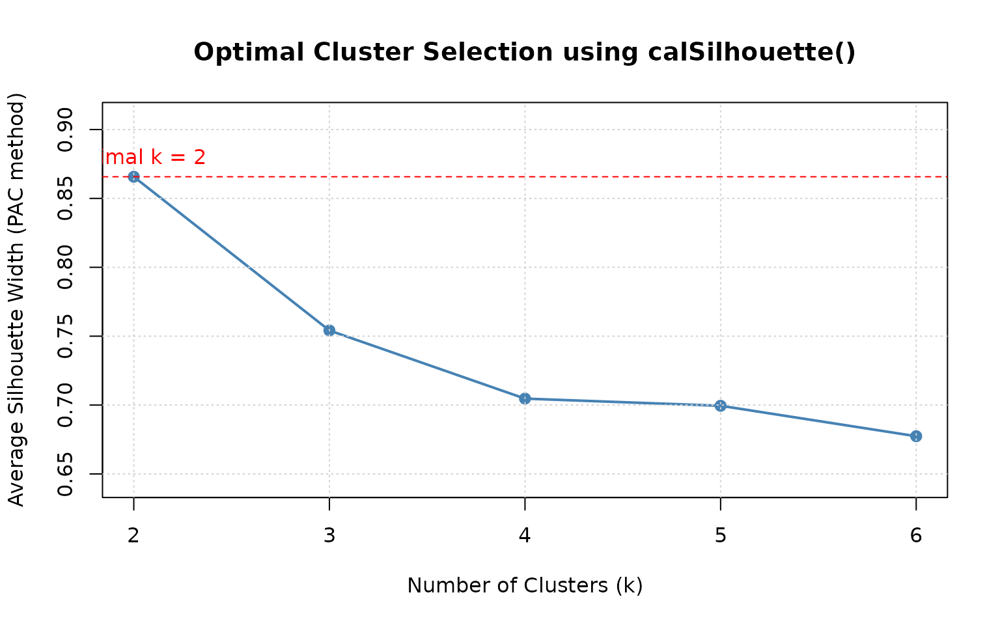
f. Method-Specific Analysis
Extract and analyze specific methods from the comprehensive summary:
# Get all pac-based methods
pac_methods <- summary_result[grep("pac", summary_result$Method), ]
cat("PAC-based methods:\n")
#> PAC-based methods:
print(pac_methods, row.names = FALSE)
#> Method Crisp Fuzzy Median
#> pac 0.7541271 0.8799106 0.8484197
#> pp_pac 0.7541271 0.8799106 0.8484197
#> nlpp_pac 0.8185224 0.9304926 0.9261387
#> pd_pac 0.7469894 0.8786105 0.8562152
# Get all medoid-based methods
medoid_methods <- summary_result[grep("medoid", summary_result$Method), ]
cat("\nMedoid-based methods:\n")
#>
#> Medoid-based methods:
print(medoid_methods, row.names = FALSE)
#> Method Crisp Fuzzy Median
#> medoid 0.8288288 0.9297577 0.9179945
#> pp_medoid 0.8288288 0.9297577 0.9179945
#> nlpp_medoid 0.8749545 0.9604788 0.9616532
#> pd_medoid 0.8196600 0.9280044 0.9225377
# Get probability-based methods (cer, db)
prob_methods <- summary_result[summary_result$Method %in% c("cer", "db"), ]
cat("\nProbability-based methods (cer, db):\n")
#>
#> Probability-based methods (cer, db):
print(prob_methods, row.names = FALSE)
#> Method Crisp Fuzzy Median
#> cer 0.8572481 0.9248327 0.9041529
#> db 0.3303585 0.4206051 0.3097745
# Compare crisp vs fuzzy vs median averaging
cat("\n=== Best Methods by Averaging Type ===\n")
#>
#> === Best Methods by Averaging Type ===
cat("Best method by crisp averaging:",
summary_result$Method[which.max(summary_result$Crisp)],
"(", round(max(summary_result$Crisp, na.rm = TRUE), 4), ")\n")
#> Best method by crisp averaging: nlpp_medoid ( 0.875 )
cat("Best method by fuzzy averaging:",
summary_result$Method[which.max(summary_result$Fuzzy)],
"(", round(max(summary_result$Fuzzy, na.rm = TRUE), 4), ")\n")
#> Best method by fuzzy averaging: nlpp_medoid ( 0.9605 )
cat("Best method by median averaging:",
summary_result$Method[which.max(summary_result$Median)],
"(", round(max(summary_result$Median, na.rm = TRUE), 4), ")\n")
#> Best method by median averaging: nlpp_medoid ( 0.9617 )g. Comparing Only Proximity-Based Methods
When only the proximity matrix is available (e.g., for crisp
clustering), calSilhouette() automatically computes only
the applicable methods:
library(proxy)
data(iris)
# K-means clustering (crisp clustering)
km <- kmeans(iris[, -5], centers = 3)
# Compute distance matrix
dist_matrix <- proxy::dist(iris[, -5], km$centers)
# Compute only proximity-based silhouettes (medoid and pac)
crisp_summary <- calSilhouette(
prox_matrix = dist_matrix,
proximity_type = "dissimilarity",
print.summary = TRUE
)
#>
#> Summary of All Silhouette Methods
#> ==========================================
#> Method Crisp Median
#> medoid 0.6663856 0.7254804
#> pac 0.5375927 0.5692253
# View results (note: no Fuzzy column since prob_matrix not provided)
print(crisp_summary)
#> Method Crisp Median
#> 1 medoid 0.6663856 0.7254804
#> 2 pac 0.5375927 0.5692253h. Heatmap Visualization of Method Comparisons
Create a heatmap to visualize performance across methods and averaging types:
library(ggplot2)
library(tidyr)
# Reshape data for heatmap
heatmap_data <- tidyr::pivot_longer(
summary_result,
cols = c(Crisp, Fuzzy, Median),
names_to = "Average_Type",
values_to = "Silhouette_Width"
)
# Create heatmap
ggplot(heatmap_data, aes(x = Average_Type, y = Method, fill = Silhouette_Width)) +
geom_tile(color = "white") +
geom_text(aes(label = round(Silhouette_Width, 3)), color = "black", size = 3) +
scale_fill_gradient2(
low = "red", mid = "yellow", high = "green",
midpoint = median(heatmap_data$Silhouette_Width, na.rm = TRUE),
na.value = "gray90"
) +
theme_minimal() +
theme(
axis.text.x = element_text(angle = 0, hjust = 0.5),
axis.text.y = element_text(size = 10),
legend.position = "right"
) +
labs(
title = "Silhouette Width Heatmap Across Methods and Averaging Types",
x = "Averaging Type",
y = "Silhouette Method",
fill = "Silhouette\nWidth"
)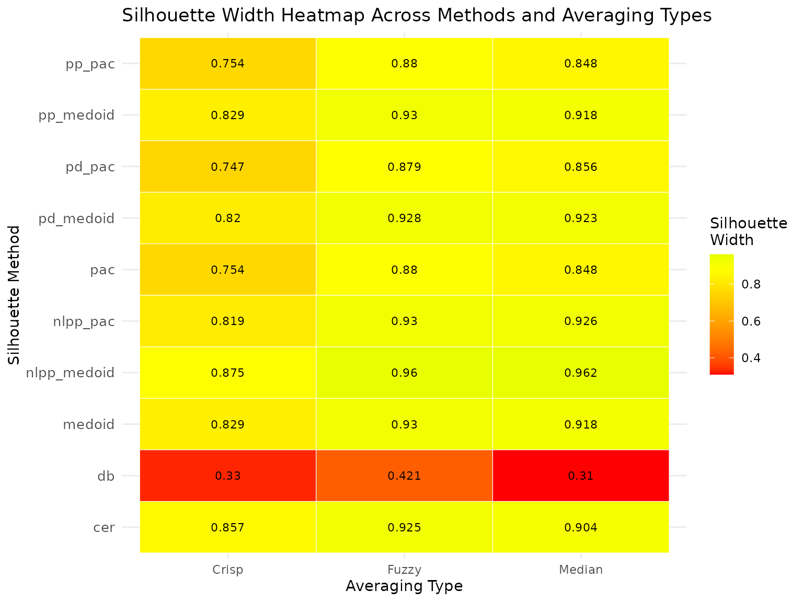
Practical Guidance:
- Use
calSilhouette()when you need a comprehensive overview of clustering quality across multiple methodological perspectives - The function is especially useful for algorithm comparison studies and sensitivity analyses
- Different methods may highlight different aspects of cluster quality; examining multiple methods provides a more robust assessment
- For crisp clustering (when only proximity matrix is available), the function automatically computes only the applicable methods (medoid, pac)
- The
aparameter controls the fuzzifier for weighted averaging in fuzzy methods (default = 2) - Consider using heatmaps or grouped bar plots to visualize method comparisons effectively
- When selecting optimal number of clusters, examine multiple methods rather than relying on a single metric
Interpretation Guidelines:
- Crisp averaging: Unweighted average, treats all observations equally
- Fuzzy averaging: Weighted by membership probabilities, emphasizes observations with stronger cluster membership
- Median averaging: Robust to outliers, provides stable estimates in the presence of extreme values
- PAC methods: More penalized, conservative estimates of cluster quality
- Medoid methods: Less penalized, may be more optimistic about cluster separation
- Density-based (db): Considers log-ratios of posterior probabilities, good for identifying density-based cluster structure
- Certainty-based (cer): Uses maximum posterior probabilities, emphasizes confidence in cluster assignments
Summary:
calSilhouette() provides a powerful, unified interface
for comprehensive silhouette analysis, enabling researchers to evaluate
clustering solutions from multiple perspectives simultaneously. This
function streamlines comparative studies, supports robust cluster
validation, and facilitates reproducible clustering diagnostics across
different algorithms and parameter settings. Its integration with the
package’s visualization capabilities makes it an essential tool for
thorough clustering quality assessment in both crisp and soft clustering
contexts.## 7. Extended Silhouette Analysis for Multi-Way Clustering
The extSilhouette() function enables silhouette-based
evaluation for multi-way clustering scenarios, such as biclustering or
tensor clustering, by aggregating silhouette indices from each mode
(e.g., rows, columns) into a single summary metric. This approach allows
you to rigorously assess the overall clustering structure when
partitioning data along multiple dimensions.
Workflow:
-
Step 1: Apply Multi-Way Clustering
Fit a biclustering algorithm to your data—in this example, we useblockcluster::coclusterContinuous()to jointly cluster the rows and columns of theirisdataset.
library(blockcluster)
data(iris)
result <- coclusterContinuous(as.matrix(iris[, -5]), nbcocluster = c(3, 2))
#> Co-Clustering successfully terminated!-
Step 2: Compute Silhouette Widths for Each
Mode
For each dimension (e.g., rows and columns), calculate silhouette widths using the membership probability matrices (result@rowposteriorprobfor rows,result@colposteriorprobfor columns) via thesoftSilhouette()function: (One can use anySilhouetteclass function to calculate when relevant proximity measure available, For consistency make sure all objects in list derived from samemethodand arguments.)
sil_mode1 <- softSilhouette(
prob_matrix = result@rowposteriorprob,
method = "pac",
print.summary = FALSE
)
sil_mode2 <- softSilhouette(
prob_matrix = result@colposteriorprob,
method = "pac",
print.summary = FALSE
)-
Step 3: Aggregate Silhouette Results with
extSilhouette()
Combine the silhouette analyses from each mode by passing them as a list toextSilhouette(). Optionally, provide descriptive dimension names:
ext_sil <- extSilhouette(
sil_list = list(sil_mode1, sil_mode2),
dim_names = c("Rows", "Columns"),
print.summary = TRUE
)
#> ---------------------------
#> Extended silhouette: 0.7057
#> ---------------------------
#> Dimension Summary:
#> dimension n_obs avg_sil_width
#> 1 Rows 150 0.6979
#> 2 Columns 4 1.0000
#>
#> Available components:
#> [1] "ext_sil_width" "dim_table"Summary:
The extSilhouette() function returns: - The overall
extended silhouette width—a weighted average summarizing clustering
quality across all modes. - A dimension statistics table, reporting the
number of observations and average silhouette width for each mode (e.g.,
rows, columns).
Note: If a distance matrix is available from the output of
a biclustering algorithm, you can compute individual mode silhouettes
using Silhouette().
The results can be combined with extSilhouette() to
enable direct comparison of clustering solutions across multiple
biclustering algorithms, facilitating objective model assessment (Kapu and C 2025).
This methodology provides a concise and interpretable assessment for complex clustering models where conventional one-dimensional indices are insufficient.